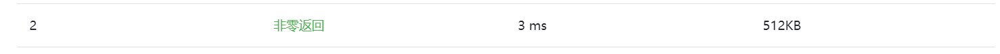

在刷算法题的时候, 不仅需要算法正确, 还要注意一些小的坑点, 才能保证程序结果的准确无误.
输入输出类
这是最容易犯的一类错误.
比如OJ上面说输入是 a seperate line, 即使在样例输入中的字符串中间没有空格, 也不能保证 OJ 上的例子中字符串中间也是没有空格的. 所以这个时候千万不能用 scanf 读取, 应该用 fgets 或者是 getline.
例: UVA-10405: https://vjudge.net/problem/UVA-10405
合法数据类
牛客网上有一道求树的高度的题, 明明说是一棵合法的二叉树, 可是在输入数据中却包含了不合法的多叉树情况. 这是需要忽略三叉之后的情况.
https://www.nowcoder.com/activity/oj?title=%E6%A0%91%E7%9A%84%E9%AB%98%E5%BA%A6&page=1
读题不仔细类
PAT Advanced 1002: A+B for polynomials
题目中明确说了NK到N1的指数范围是非负的, 但是我误以为系数a的范围也是非负的. 导致第二个测试点一直过不去… 其实系数的范围可正也可负.
生活常识类
排名问题
PAT Advanced 1012: The Best Rank
给A B C三人排名时如果分数 A = B > C, 那么排名为 1,1,3
题目描述不清类
PAT 1032 Sharing
题目中明明说了, The address of a node is a 5-digit positive integer. 可是实际上包含五位全部为 0 的合法地址… 也就是说在判定链表是否结束的时候, 使用 (next > 0) 是不行的, 要用 (next >= 0). 也许是出题人理解的 positive integer 和我们有点不太一样…
PAT 1038 Recover the Smallest Number
题目中说最后结果不能是0, 实际上有0的数据. 我在代码里写了一行测试1
2
3
4
5For(i,N){
scanf("%s", segments[i]);
if (atoi(segments[i]) == 0) {--i;--N;}
}
if (N==0) {puts("0"); return 1;}
结果果然产生了非零返回… 让我很是气愤.
